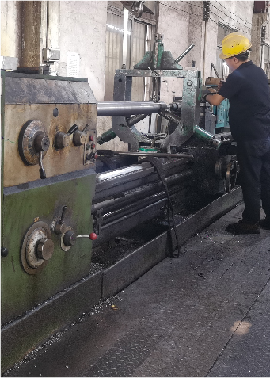

Kiểm soát chất lượng
Kiểm soát chất lượng trước khi giao máy
Khách hàng mua máy công nghiệp cần thấy rõ máy được kiểm tra như thế nào trước khi xuất xưởng.
| Thiết kế cấu hình | Xác nhận vật liệu, khổ rộng, tốc độ, quy trình và mức tự động hóa trước khi sản xuất. |
|---|---|
| Lắp ráp cơ khí | Kiểm tra truyền động, xả/thu cuộn, kết cấu ép, sấy và an toàn cơ khí. |
| Điện điều khiển | Kiểm tra tủ điện, PLC, HMI, biến tần, servo, nhiệt độ và lực căng. |
| Chạy thử | Chạy thử theo cấu hình máy, kiểm tra chuyển động, nhiệt, lực căng và ổn định cuộn. |
| Nghiệm thu | Ghi nhận vấn đề cần chỉnh và xác nhận trước khi đóng gói giao hàng. |

Tủ điện, PLC, HMI và hệ thống điều khiển lực căng là các điểm cần kiểm tra kỹ trước khi nghiệm thu.
Hình ảnh kiểm tra thực tế
Điện điều khiển, cơ khí và chạy thử trước giao hàng


